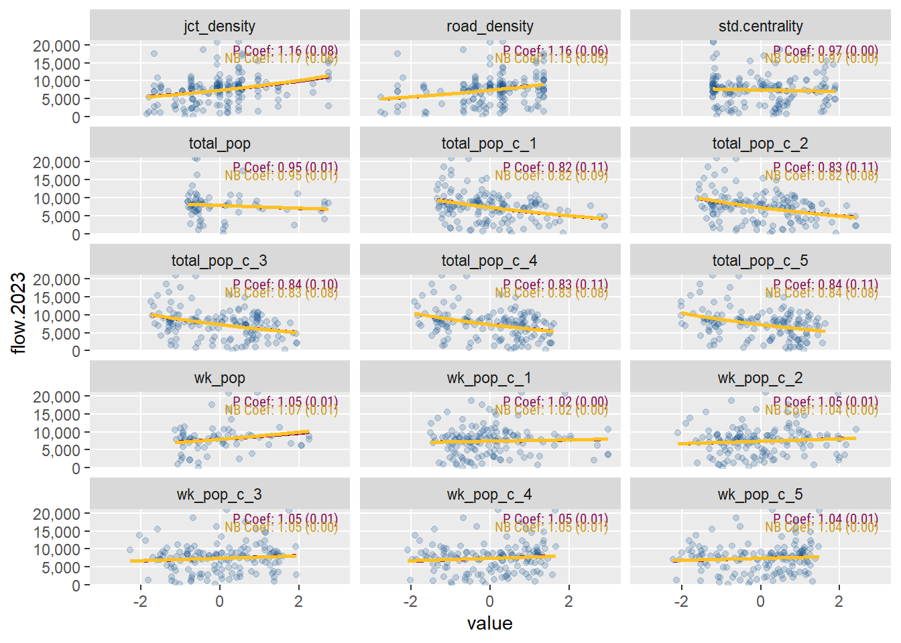

library(tidyverse)
library(kableExtra)
library(extrafont)
library(hrbrthemes)
library(tmap)
library(sf)Data Consolidation and Exploration
Loading data
net_data_sf <- st_read("03_preprocessing_files/network_data.gpkg", layer = "network_data")Reading layer `network_data' from data source
`C:\Users\ts18jpf\OneDrive - University of Leeds\02_MsC\99_GEOG5099M_Dissertation\GEOG5099_Analysis\03_preprocessing_files\network_data.gpkg'
using driver `GPKG'
Simple feature collection with 46294 features and 32 fields
Geometry type: LINESTRING
Dimension: XY
Bounding box: xmin: 494301.7 ymin: 413484.8 xmax: 523983.6 ymax: 445801.9
Projected CRS: OSGB36 / British National GridLSOA_sf <- st_read("03_preprocessing_files/network_data.gpkg", layer = "LSOA")Reading layer `LSOA' from data source
`C:\Users\ts18jpf\OneDrive - University of Leeds\02_MsC\99_GEOG5099M_Dissertation\GEOG5099_Analysis\03_preprocessing_files\network_data.gpkg'
using driver `GPKG'
Simple feature collection with 259 features and 15 fields
Geometry type: MULTIPOLYGON
Dimension: XY
Bounding box: xmin: 488932.5 ymin: 411729 xmax: 527121.4 ymax: 446712.1
Projected CRS: OSGB36 / British National Gridjct_sf <- st_read("03_preprocessing_files/network_data.gpkg", layer = "junctions")Reading layer `junctions' from data source
`C:\Users\ts18jpf\OneDrive - University of Leeds\02_MsC\99_GEOG5099M_Dissertation\GEOG5099_Analysis\03_preprocessing_files\network_data.gpkg'
using driver `GPKG'
Simple feature collection with 17874 features and 6 fields
Geometry type: POINT
Dimension: XY
Bounding box: xmin: -0.5694518 ymin: 53.60775 xmax: -0.1200969 ymax: 53.89554
Geodetic CRS: WGS 84junctions_exp_plot <- read_rds("03_preprocessing_files/junctions_ids_exp_plot.rds")
bounds_model <- st_read("03_preprocessing_files/bounds_model.geoJSON")Reading layer `bounds_model' from data source
`C:\Users\ts18jpf\OneDrive - University of Leeds\02_MsC\99_GEOG5099M_Dissertation\GEOG5099_Analysis\03_preprocessing_files\bounds_model.geoJSON'
using driver `GeoJSON'
Simple feature collection with 1 feature and 0 fields
Geometry type: POLYGON
Dimension: XY
Bounding box: xmin: 504809.6 ymin: 426835.9 xmax: 514146.8 ymax: 434430.8
Projected CRS: OSGB36 / British National GridLSOA_data <- LSOA_sf |> st_drop_geometry()LSOA data is joined with the network data. Also, total population and total people employed are scaled based on the length proportion calculated before. Road type is converted to factor
Joinig LSOA data and network data
model_data_sf <- net_data_sf[bounds_model,] |>
left_join(LSOA_data |>select(
LSOA21CD,
total_pop,
total_employed,
car_avail_perc,
wk_pop,
car_comm_perc,
road_density,
jct_density,
cars_percap_2018,
area_km2
) |>
rename(total_emp_pop = total_employed),
by = join_by(LSOA21CD)) |>
mutate(across(total_pop:wk_pop,
list(original = \(x) x))) |>
mutate(across(c(total_pop,wk_pop),
\(x) if_else(road_type=="major",NA,x * portion_lsoa))) |>
mutate(total_pop = total_pop*car_avail_perc,
wk_pop=wk_pop*car_comm_perc) |>
mutate(highway = str_remove(highway,"_link"))A version without the geometry of the dataset
model_data <- model_data_sf |>
sf::st_drop_geometry() Exploration
Network
library(ggridges)
ggplot(model_data_sf[bounds_model,],
aes(y=fct_rev(fct_relevel(highway,
c("trunk","primary","secondary","tertiary","unclassified", "residential"))),
x=d))+
geom_jitter(alpha = 0.15,size = 0.2)+
geom_boxplot(outlier.shape = NA,alpha = 0.7,varwidth = T)+
labs(y = "",
x = "link lenght (m)")A quick look at the distribution of junctions by road type
junctions_exp_plot |>
ggplot(aes(x=fct_rev(min_type),y = max_type))+
geom_tile(aes(fill = dens))+
scale_fill_distiller(palette="Blues", direction=1)+
geom_text(aes(label = sprintf(dens*100,fmt = "%0.0f%%"),
col = dens<0.4),family = "Roboto Condensed")+
scale_color_manual(values = c("white","blue"))+
coord_fixed() # theme_ipsum_rc()Sample size
Extracting sample size based on the number of monitored edges
model_data |>
mutate(bool.flow.2023 = !is.na(flow.2023)) |>
summarise(n_edges = n(),.by = c(bool.flow.2023,road_type)) |>
mutate(sample_size = n_edges/sum(n_edges),
.by = road_type) |>
filter(bool.flow.2023) |>
select(road_type,sample_size) |>
mutate(sample_size = scales::percent(sample_size)) |>
kable(digits = 2) |>
kable_minimal() |>
kable_paper()| road_type | sample_size |
|---|---|
| minor | 0.5% |
| major | 9.4% |
Same analysis with km of build roads (%)
model_data |>
mutate(bool.flow.2023 = !is.na(flow.2023)) |>
summarise(d_edges = sum(d),.by = c(bool.flow.2023,road_type)) |>
mutate(sample_size = d_edges/sum(d_edges),
.by = road_type) |>
filter(bool.flow.2023) |>
select(road_type,sample_size) |>
mutate(sample_size = scales::percent(sample_size)) |>
kable(digits = 2) |>
kable_minimal() |>
kable_paper()| road_type | sample_size |
|---|---|
| minor | 1% |
| major | 11% |
Analysis of junction types with flows
jct_sf|>
sf::st_drop_geometry() |>
mutate(bool.flow.2023 = !is.na(flow.2023)) |>
summarise(n_jct = n(),.by = c(bool.flow.2023,jct_type)) |>
mutate(sample_size = n_jct/sum(n_jct),
.by = jct_type) |>
filter(bool.flow.2023) |>
select(jct_type,sample_size) |> mutate(sample_size = scales::percent(sample_size)) |>
kable(digits = 2) |>
kable_minimal() |>
kable_paper()| jct_type | sample_size |
|---|---|
| minmaj | 10.3% |
| minor | 0.3% |
| major | 3.0% |
Flows Distribution
model_data |>
ggplot(aes(flow.2023))+
geom_histogram(binwidth = 750,col = "dodgerblue4",fill = "dodgerblue4",alpha = 0.5,linewidth = 1)+
theme_ipsum_rc()+
scale_x_comma()+
geom_hline(yintercept = 0,linewidth = 2,col = "black")+
labs(x = "AADF",
y = "Frequency")+
# facet_grid(highway~.)+
theme(panel.grid.minor.y = element_blank(),
panel.grid.minor.x = element_blank())Warning: Removed 14918 rows containing non-finite outside the scale range
(`stat_bin()`).Catchment of each node
Alternatively, population and jobs serviced can be used as as per Selby 2011. Using population and jobs served within specific distances. For this purpose, the catchments are loaded
isochrones <- read_csv("03_preprocessing_files/junctions_catchment.csv")Rows: 15297884 Columns: 5
── Column specification ────────────────────────────────────────────────────────
Delimiter: ","
dbl (5): from, tlim, id, x, y
ℹ Use `spec()` to retrieve the full column specification for this data.
ℹ Specify the column types or set `show_col_types = FALSE` to quiet this message.This iterates through all origin nodes and calculates the total population and jobs for each time band
consolidated_catchment <- isochrones |>
mutate(id = as.character(id)) |>
left_join(model_data |>
select(to_id, total_pop, wk_pop),
by=c("id"="to_id"),
relationship = "many-to-many") |>
summarise(across(ends_with("pop"),
\(x) sum(x,na.rm = T)),
.by = c(from,tlim)) |>
right_join(isochrones |>
expand(from,tlim),
by = c("from","tlim")) |>
arrange(from,tlim) |>
mutate(across(ends_with("pop"),
\(x) if_else(is.na(x),0,x)),
across(ends_with("pop"),
list(c = \(x) cumsum(x))),
.by = from) |>
select(from,tlim,ends_with("c")) |>
pivot_wider(names_from = tlim,values_from = total_pop_c:wk_pop_c) |>
mutate(from = as.character(from))Catchment of residents within 2 minutes
tmap_mode("plot")tmap mode set to plottingtm_shape(model_data_sf)+
tm_lines("skyblue",lwd = 0.7)+
tm_shape(model_data_sf |>
left_join(consolidated_catchment,
by = c("from_id"="from")) |>
mutate(total_pop_c_2 = if_else(highway %in% c("residential",
"unclassified"
),
NA,
total_pop_c_2)) |>
filter(!is.na(total_pop_c_2)))+
tm_lines("total_pop_c_2",lwd = 2)Catchment of usual workplace population
tm_shape(model_data_sf)+
tm_lines("skyblue",lwd = 0.7)+
tm_shape(model_data_sf |>
left_join(consolidated_catchment,
by = c("from_id"="from"))|>
mutate(wk_pop_c_2 = if_else(highway %in% c("residential",
"unclassified"),
NA,
wk_pop_c_2)) |>
filter(!is.na(wk_pop_c_2)))+
tm_lines("wk_pop_c_2",lwd = 2)
Consolidating the dataset for model fitting
Joining the catchment to the model_data dataset
model_data_expanded <- model_data_sf |>
left_join(consolidated_catchment, by = c("from_id" = "from")) |>
mutate(across(contains("_c_"), \(x) {
# if_else(highway %in% c("residential", "unclassified"), NA, x)
if_else(highway %in% c("residential"), NA, x)
})) |>
mutate(
across(contains("pop"), \(x) x / 1e3),
centrality = centrality,
across(starts_with("flow."), \(x) round(x) |> as.integer())
)model_data_expanded |>
st_drop_geometry() |>
drop_na(flow.2023) |>
select(dist.jct,
std.centrality,
jct_density,
road_density,
total_pop,
wk_pop,
total_pop_c_1:wk_pop_c_5) %>%
map_df(.f = ~ broom::tidy(summary(.x)), .id = "code") |>
kable(digits = 3)Warning in tidy.summaryDefault(summary(.x)): `tidy.summaryDefault()` is
deprecated. Please use `skimr::skim()` instead.
Warning in tidy.summaryDefault(summary(.x)): `tidy.summaryDefault()` is
deprecated. Please use `skimr::skim()` instead.
Warning in tidy.summaryDefault(summary(.x)): `tidy.summaryDefault()` is
deprecated. Please use `skimr::skim()` instead.
Warning in tidy.summaryDefault(summary(.x)): `tidy.summaryDefault()` is
deprecated. Please use `skimr::skim()` instead.
Warning in tidy.summaryDefault(summary(.x)): `tidy.summaryDefault()` is
deprecated. Please use `skimr::skim()` instead.
Warning in tidy.summaryDefault(summary(.x)): `tidy.summaryDefault()` is
deprecated. Please use `skimr::skim()` instead.
Warning in tidy.summaryDefault(summary(.x)): `tidy.summaryDefault()` is
deprecated. Please use `skimr::skim()` instead.
Warning in tidy.summaryDefault(summary(.x)): `tidy.summaryDefault()` is
deprecated. Please use `skimr::skim()` instead.
Warning in tidy.summaryDefault(summary(.x)): `tidy.summaryDefault()` is
deprecated. Please use `skimr::skim()` instead.
Warning in tidy.summaryDefault(summary(.x)): `tidy.summaryDefault()` is
deprecated. Please use `skimr::skim()` instead.
Warning in tidy.summaryDefault(summary(.x)): `tidy.summaryDefault()` is
deprecated. Please use `skimr::skim()` instead.
Warning in tidy.summaryDefault(summary(.x)): `tidy.summaryDefault()` is
deprecated. Please use `skimr::skim()` instead.
Warning in tidy.summaryDefault(summary(.x)): `tidy.summaryDefault()` is
deprecated. Please use `skimr::skim()` instead.
Warning in tidy.summaryDefault(summary(.x)): `tidy.summaryDefault()` is
deprecated. Please use `skimr::skim()` instead.
Warning in tidy.summaryDefault(summary(.x)): `tidy.summaryDefault()` is
deprecated. Please use `skimr::skim()` instead.
Warning in tidy.summaryDefault(summary(.x)): `tidy.summaryDefault()` is
deprecated. Please use `skimr::skim()` instead.| code | minimum | q1 | median | mean | q3 | maximum | na |
|---|---|---|---|---|---|---|---|
| dist.jct | 0.000 | 2.576 | 6.746 | 13.969 | 15.153 | 204.068 | NA |
| std.centrality | 0.000 | 0.001 | 0.003 | 0.003 | 0.004 | 0.007 | NA |
| jct_density | 31.234 | 107.316 | 152.911 | 152.362 | 183.149 | 332.511 | NA |
| road_density | 6.572 | 23.009 | 27.763 | 26.041 | 30.014 | 35.592 | NA |
| total_pop | 0.001 | 0.004 | 0.007 | 0.016 | 0.020 | 0.066 | 90 |
| wk_pop | 0.000 | 0.003 | 0.008 | 0.010 | 0.013 | 0.039 | 90 |
| total_pop_c_1 | 0.001 | 0.464 | 1.069 | 1.213 | 1.651 | 4.098 | 16 |
| total_pop_c_2 | 0.130 | 2.622 | 6.050 | 6.032 | 8.861 | 15.081 | 16 |
| total_pop_c_3 | 1.305 | 7.532 | 17.868 | 16.769 | 24.071 | 34.052 | 16 |
| total_pop_c_4 | 4.906 | 18.476 | 39.682 | 35.391 | 48.354 | 60.985 | 16 |
| total_pop_c_5 | 15.089 | 39.026 | 70.652 | 64.233 | 83.219 | 103.997 | 16 |
| wk_pop_c_1 | 0.005 | 0.418 | 0.674 | 0.776 | 0.983 | 2.502 | 16 |
| wk_pop_c_2 | 0.082 | 2.434 | 3.418 | 3.685 | 4.871 | 7.853 | 16 |
| wk_pop_c_3 | 1.894 | 7.269 | 9.792 | 9.784 | 12.656 | 16.463 | 16 |
| wk_pop_c_4 | 7.959 | 15.391 | 21.282 | 20.255 | 25.624 | 29.957 | 16 |
| wk_pop_c_5 | 16.065 | 29.144 | 38.974 | 36.534 | 44.454 | 50.171 | 16 |
Correlation between flows and some of the variables
Linear
model_data_expanded |>
st_drop_geometry() |>
drop_na(flow.2023) |>
select(flow.2023,
highway,
std.centrality,
jct_density,
road_density,
total_pop,
wk_pop,
total_pop_c_1:wk_pop_c_5) |>
select(-highway) |>
mutate(across(std.centrality:wk_pop_c_5,\(x) (x-mean(x,na.rm = T))/sd(x,na.rm = T))) |>
pivot_longer(-flow.2023) |>
ggplot(aes(y=flow.2023,x=value))+
geom_point(col = "dodgerblue4",alpha = 0.2, shape = 19)+
facet_wrap(name~.)+
# coord_fixed()+
scale_y_comma()+
scale_x_continuous(limits = c(-3,3))+
geom_smooth(method = "lm",se = F, col = "deeppink4")+
theme_ipsum_rc()`geom_smooth()` using formula = 'y ~ x'Warning: Removed 343 rows containing non-finite outside the scale range
(`stat_smooth()`).Warning: Removed 343 rows containing missing values or values outside the scale range
(`geom_point()`).Individual regression
library(tidymodels)── Attaching packages ────────────────────────────────────── tidymodels 1.2.0 ──✔ broom 1.0.6 ✔ rsample 1.2.1
✔ dials 1.2.1 ✔ tune 1.2.1
✔ infer 1.0.7 ✔ workflows 1.1.4
✔ modeldata 1.3.0 ✔ workflowsets 1.1.0
✔ parsnip 1.2.1 ✔ yardstick 1.3.1
✔ recipes 1.0.10 ── Conflicts ───────────────────────────────────────── tidymodels_conflicts() ──
✖ purrr::%||%() masks base::%||%()
✖ scales::discard() masks purrr::discard()
✖ dplyr::filter() masks stats::filter()
✖ recipes::fixed() masks stringr::fixed()
✖ kableExtra::group_rows() masks dplyr::group_rows()
✖ dplyr::lag() masks stats::lag()
✖ yardstick::spec() masks readr::spec()
✖ recipes::step() masks stats::step()
• Learn how to get started at https://www.tidymodels.org/start/coefs <- model_data_expanded |>
st_drop_geometry() |>
drop_na(flow.2023) |>
select(flow.2023,
highway,
std.centrality,
jct_density,
road_density,
total_pop,
wk_pop,
total_pop_c_1:wk_pop_c_5) |>
select(-highway) |>
mutate(across(std.centrality:wk_pop_c_5,\(x) (x-mean(x,na.rm = T))/sd(x,na.rm = T))) |>
pivot_longer(-flow.2023) |>
nest(data = -name) |>
mutate(model.p = map(data,\(x) glm(flow.2023~value,data = x,family = "poisson")),
model.nb = map(data,\(x) MASS::glm.nb(flow.2023~value,data = x)),
values.p = exp(map_dbl(model.p,\(x) tidy(x)$estimate[tidy(x)$term == "value"])),
values.nb = exp(map_dbl(model.nb,\(x) tidy(x)$estimate[tidy(x)$term == "value"])),
pR2.p = map_dbl(model.p,\(x) 1-(x$deviance/x$null.deviance)),
pR2.nb = map_dbl(model.nb,\(x) 1-(x$deviance/x$null.deviance))) |>
select(-data,-model.p,-model.nb)
z_data <- model_data_expanded |>
st_drop_geometry() |>
drop_na(flow.2023) |>
select(flow.2023,
highway,
std.centrality,
jct_density,
road_density,
total_pop,
wk_pop,
total_pop_c_1:wk_pop_c_5) |>
select(-highway) |>
mutate(across(std.centrality:wk_pop_c_5,\(x) (x-mean(x,na.rm = T))/sd(x,na.rm = T)))
z_data|>
pivot_longer(-flow.2023) |>
ggplot(aes(y=flow.2023,x=value))+
geom_point(col = "dodgerblue4",alpha = 0.2, shape = 19)+
geom_text(data = coefs,
aes(x = 3,y = 18.7e3,
label = paste0("P Coef: ",round(values.p,2), " (",sprintf("%0.2f",pR2.p),")")),
colour = "deeppink4",family = "Roboto Condensed",hjust = 1, size = 8,size.unit = "pt")+
geom_text(data = coefs,
aes(x = 3,y = 16.5e3,
label = paste0("NB Coef: ",round(values.nb,2), " (",sprintf("%0.2f",pR2.nb),")")),
colour = "goldenrod3",family = "Roboto Condensed",hjust = 1,size = 8,size.unit = "pt")+
facet_wrap(name~.,ncol = 3)+
# coord_fixed()+
scale_y_comma()+
scale_x_continuous(limits = c(-3,3))+
geom_smooth(method = "glm", se = F,
method.args = list(family = "poisson"), col = "deeppink4",alpha = 0.5)+
geom_smooth(method = MASS::glm.nb, se = F, col = "goldenrod1",alpha = 0.5)+
# theme_ipsum_rc()+
theme(panel.grid.minor.y = element_blank(),
panel.grid.minor.x = element_blank())`geom_smooth()` using formula = 'y ~ x'Warning: Removed 343 rows containing non-finite outside the scale range
(`stat_smooth()`).`geom_smooth()` using formula = 'y ~ x'Warning: Removed 343 rows containing non-finite outside the scale range
(`stat_smooth()`).Warning: Removed 343 rows containing missing values or values outside the scale range
(`geom_point()`).
A quick look at the distribution of centrality measures by road type
model_data_expanded |> ggplot(aes(x = fct_reorder(highway,std.centrality,median),y = std.centrality))+
geom_boxplot()model_data_expanded |> st_drop_geometry() |> summarise(across(std.centrality,median),.by = highway) |> arrange(-std.centrality) highway std.centrality
1 primary 3.071385e-03
2 trunk 2.994728e-03
3 secondary 1.967610e-03
4 tertiary 3.235628e-04
5 unclassified 8.326801e-06
6 residential 6.174949e-06Exploring interactions among the variables in the dataset
library(ggcorrplot)
cor_mat <- z_data |> select(-flow.2023) |> cor(use = "pairwise.complete.obs") |> round(digits = 2)
p.mat <- z_data |> select(-flow.2023) |> cor_pmat()
a <- ggcorrplot(cor_mat,
p.mat = p.mat,
hc.order = TRUE,
ggtheme = hrbrthemes::theme_ipsum_rc,legend.title = "Correlation",
type = "lower", insig = "blank",
colors = c('#ca0020','#f7f7f7','#0571b0'))
a+ geom_text(aes(
label = ifelse(abs(value)>0,value,NA) ),
family = "Roboto Condensed",size = 8,size.unit = "pt")+
theme(legend.position = "none")Warning: Removed 45 rows containing missing values or values outside the scale range
(`geom_text()`).Saving data
st_write(model_data_expanded,"03_preprocessing_files/model_data.gpkg",delete_dsn = T) Deleting source `03_preprocessing_files/model_data.gpkg' using driver `GPKG'
Writing layer `model_data' to data source
`03_preprocessing_files/model_data.gpkg' using driver `GPKG'
Writing 15076 features with 55 fields and geometry type Line String.